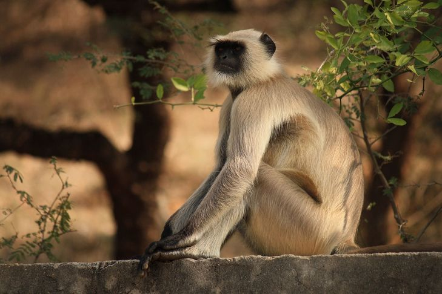

Scimmia

Nome comune: Scimmia
Nome scientifico: Simiiformes
Ordine: Primates
Famiglia: Cercopithecidae
Habitat: La scimmia comune è considerato un primate esclusivo dell'Africa e la sua distribuzione si è notevolmente ridotta negli ultimi secoli. Questa specie è strettamente legata alla presenza di zone alberate, poichè normalmente vive nella foresta umida tropicale e nelle foreste della savana.
Riproduzione: La gestazione delle scimmie dura approssimativamente quanto quella di un essere umano, circa 240 giorni. La riproduzione e gli accoppiamenti non obbediscono alla legge del maschio più forte tra i maschi e nemmeno della predominanza del sesso maschile su femminile. Siamo in una società matriarcale e sono le femmine a dominare.
Curiosità: Le scimmie cominciarono a differenziarsi circa 40 milioni di anni fa nei parvordini delle catarrine (scimmie del Vecchio Mondo) e delle platirrine, che andarono a colonizzare le Americhe (scimmie del Nuovo Mondo). 25 milioni di anni fa avvenne la differenziazione delle scimmie antropomorfe in seno alle catarrine.